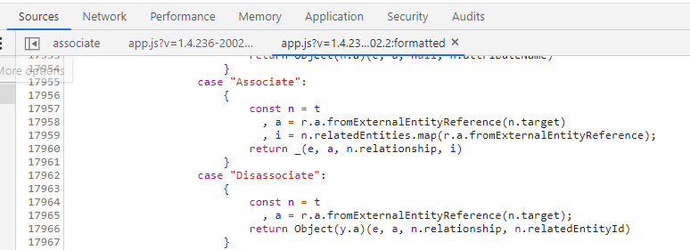
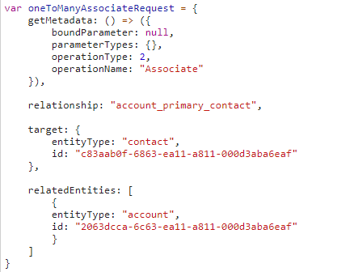
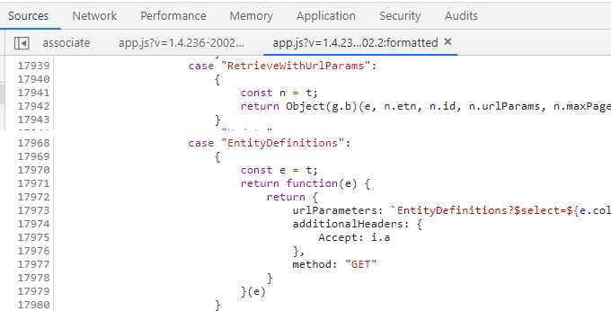

Associate and disassociate entities using the Xrm.WebApi Client API
With Dynamics 365: 2020 release wave 1 it now looks like it’s possible to associate and disassociate records using the Xrm.WebApi in the Client JavaScript API. Looking through the source code, I’ve come across this in the past, but it hasn’t been working in earlier releases.
The interesting bits from the source:

As the documentation makes no mention of the Associate and Disassociate operations I’m unsure if they are officially supported or not. Use with caution!
Usage:
Associate Many-to-one (N:1) relations
I’ll get right to it, the syntax is pretty simple if you’ve used the execute function before:
var manyToOneAssociateRequest = {
getMetadata: () => ({
boundParameter: null,
parameterTypes: {},
operationType: 2,
operationName: "Associate"
}),
relationship: "account_primary_contact",
target: {
entityType: "account",
id: "2063dcca-6c63-ea11-a811-000d3aba6eaf"
},
relatedEntities: [
{
entityType: "contact",
id: "c83aab0f-6863-ea11-a811-000d3aba6eaf"
}
]
}
Xrm.WebApi.online.execute(manyToOneAssociateRequest).then(
(success) => { console.log("Success", success); },
(error) => { console.log("Error", error); }
)
Associate One-to-many (1:N) relations
This is really just the reverse of N:1 relations:

Many-to-many association
I think this is the most interesting use case, as this allows association of multiple entities in one request. This goes beyond what’s supported in the “raw” Web API.
Note: In the example below I’ve created a custom entity named jaj_role. This has a many-to-many relationship to contact named jaj_role_contact.
var manyToManyAssociateRequest = {
getMetadata: () => ({
boundParameter: null,
parameterTypes: {},
operationType: 2,
operationName: "Associate"
}),
relationship: "jaj_role_contact",
target: {
entityType: "contact",
id: "c83aab0f-6863-ea11-a811-000d3aba6eaf"
},
relatedEntities: [
{
entityType: "jaj_role",
id: "aae3175e-cb63-ea11-a811-000d3aba6eaf"
},
{
entityType: "jaj_role",
id: "ace3175e-cb63-ea11-a811-000d3aba6eaf"
}
]
}
Xrm.WebApi.online.execute(manyToManyAssociateRequest).then(
(success) => { console.log("Success", success); },
(error) => { console.log("Error", error); }
)
Disassociation
Sadly, it looks like disassociate only supports one disassociation per request.
var disassociateRequest = {
getMetadata: () => ({
boundParameter: null,
parameterTypes: {},
operationType: 2,
operationName: "Disassociate"
}),
relationship: "account_primary_contact",
target: {
entityType: "contact",
id: "c83aab0f-6863-ea11-a811-000d3aba6eaf"
},
relatedEntityId: "2063dcca-6c63-ea11-a811-000d3aba6eaf"
}
Xrm.WebApi.online.execute(disassociateRequest).then(
(success) => { console.log("Success", success); },
(error) => { console.log("Error", error); }
)
Bonus tip #1:
Since we are using the Xrm.WebApi.online.execute function it should also be possible to batch the requests using the Xrm.WebApi.online.executeMultiple function.
var requests = [req1, req2, req3];
Xrm.WebApi.online.executeMultiple(requests).then(successCallback, errorCallback);
Bonus tip #2:
Looking through the code there is also mentions of the operations RetriveWithUrlParams and EntityDefinitions. I’ll leave it to you to figure those out 😊
